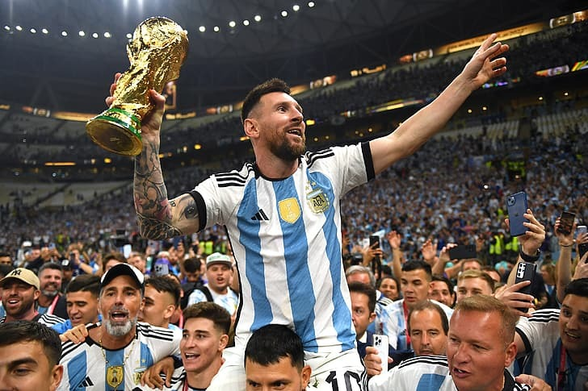
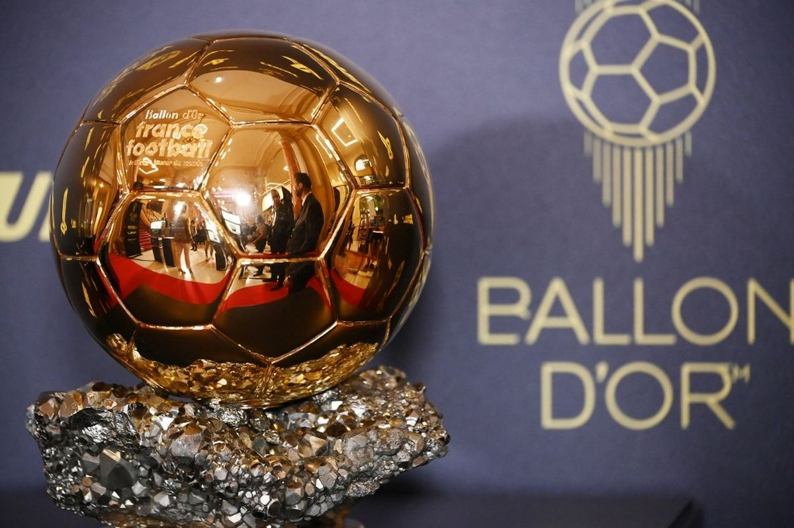
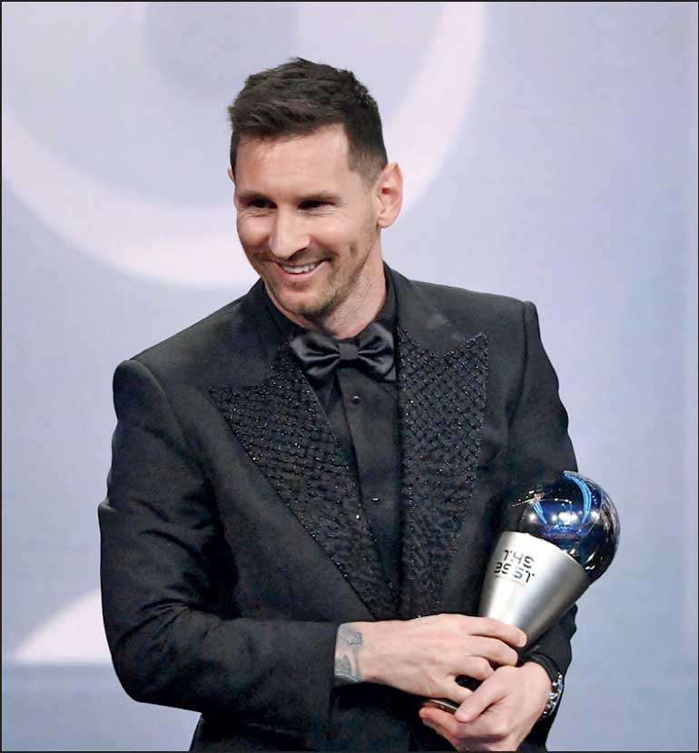
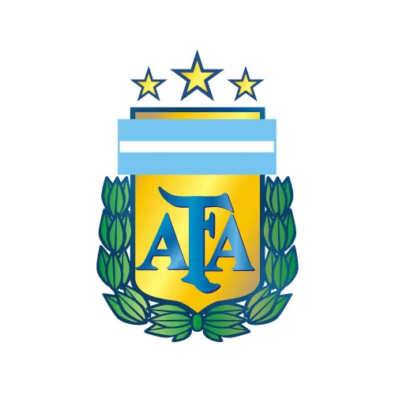

Lionel messi (lahir 24 juni 1987) adalah pesepak bola profesional argentina yang bermain sebagai penyerang sekaligus kapten untuk klub Major League Soccer, inter Miami CF, dan Timnas Argentina. Dianggap sebagai salah satu pemain terhebat sepanjang masa (GOAT), ia memegang rekor 8 penghargaan Ballon d'Or.


